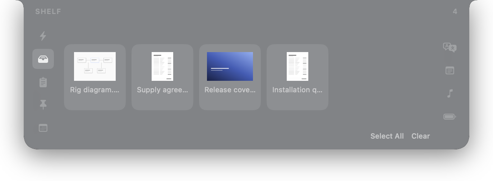
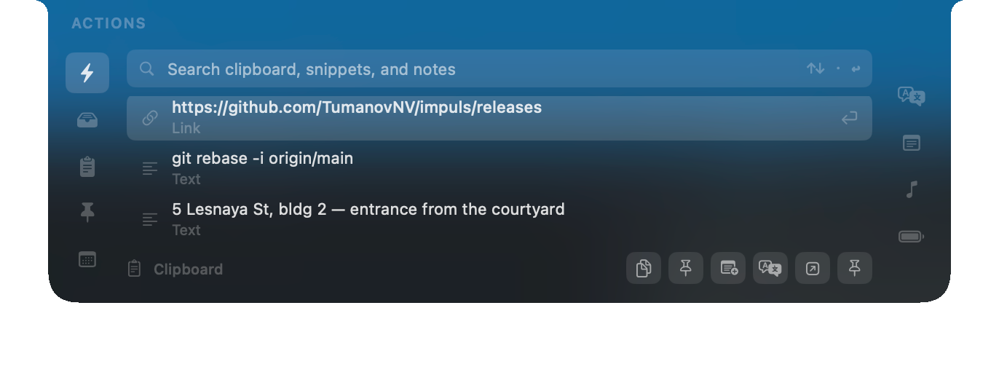
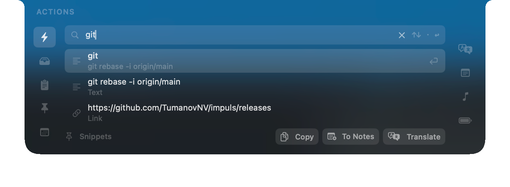
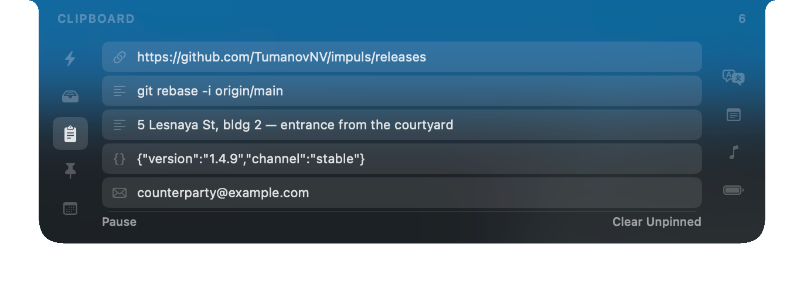
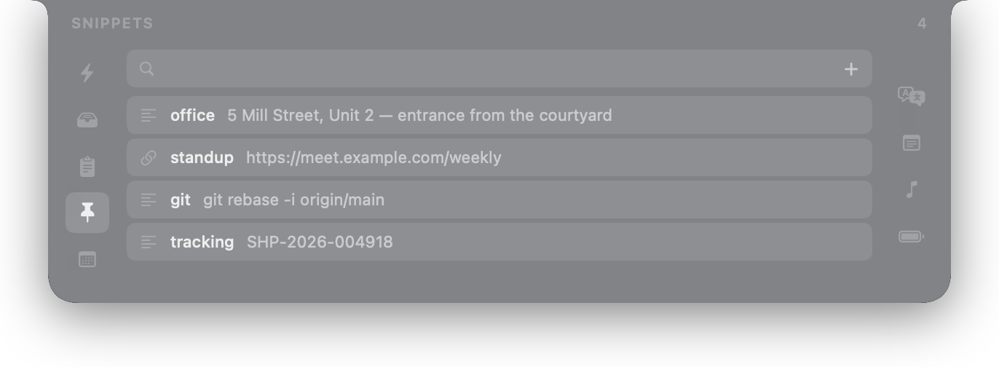
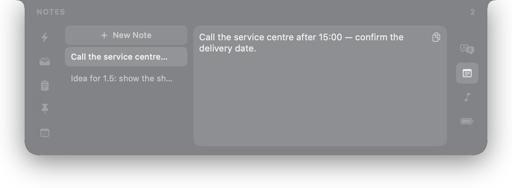
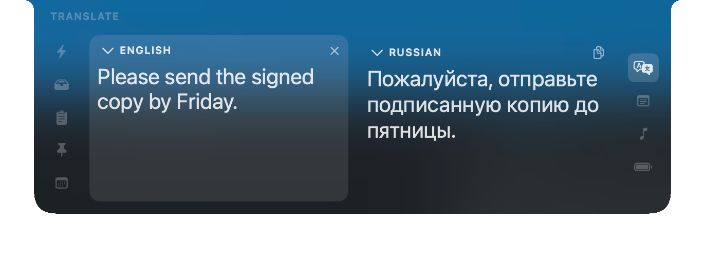
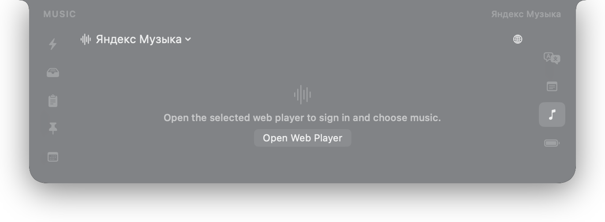
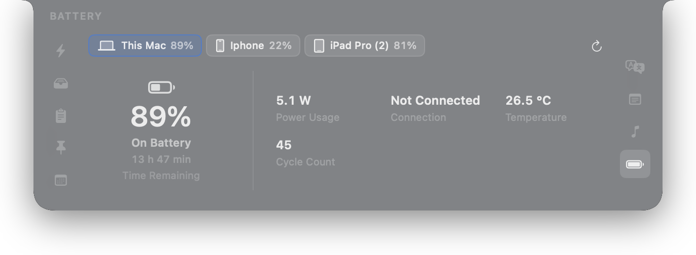

画像を横に動かしてパネル全体を見る
ファイル棚
ファイルをパネルへ置き、別のアプリへ移って、必要な場所で取り出せます。元ファイルはそのままです。棚が保持するのはコピーではなく参照です。
Apple Vision のローカルツールも使えます。テキスト認識、背景削除、形式変換、画像の縮小、複数画像からの PDF 作成などです。結果は必ず元ファイルの隣に新しいファイルとして作られ、直前の操作は取り消せます。
macOS 向けネイティブアプリ
朝コピーした内容を探す。隣のアプリからファイルを受け取る。定型文を挿入したり、短い文を翻訳したりする。IMPULS は現在のウインドウの上に開き、数秒だけ手助けして、また消えます。作業中の書類から離れる必要も、あとで戻る場所を探す必要もありません。

画像を横に動かしてパネル全体を見る
Mac 上の Impuls パネル。表示内容はデモデータです。
なぜ
朝届いた住所を探す。メールからエディタへファイルを移す。以前書いた表現をもう一度見つける。どれも数秒の作業ですが、そのたびに書類を離れ、別のウインドウを探し、元の作業へ戻る必要があります。
Impuls は、クリップボード履歴、ファイル棚、定型文、メモを現在のウインドウの上にある 1 つの面へまとめます。別のアプリへ移動する代わりに、パネルを開いて必要なものを取り、その場から作業を続けられます。
アクション
クリップボード履歴、定型文、メモを同じ検索欄から探せます。どこに保存したかを覚えておく必要はありません。

画像を横に動かしてパネル全体を見る
どのアプリからでもグローバルショートカットで、または画面上端へポインタを移動して開けます。
検索は大文字・小文字やダイアクリティカルマークを区別せず、完全一致を上位に表示します。インデックスは現在のローカルデータから生成され、別のデータベースとして保存されません。
コピー、定型文として保存、メモ作成、翻訳、リンクを開く、Finder でファイルを表示する、といった操作をその場で行えます。
↑↓で結果を選択、Enterでコピー、Escでパネルを閉じます。
モジュール
ディスプレイの切り欠きの左右に 9 個のモジュールアイコンがあります。共通する基準は 1 つだけです。別のアプリへ移るほどではない短い作業を片付けること。各モジュールは設定で無効化したり並べ替えたりできます。アクションとバッテリーは別セクションで説明し、その他をここで紹介します。

画像を横に動かしてパネル全体を見る
ファイルをパネルへ置き、別のアプリへ移って、必要な場所で取り出せます。元ファイルはそのままです。棚が保持するのはコピーではなく参照です。
Apple Vision のローカルツールも使えます。テキスト認識、背景削除、形式変換、画像の縮小、複数画像からの PDF 作成などです。結果は必ず元ファイルの隣に新しいファイルとして作られ、直前の操作は取り消せます。

画像を横に動かしてパネル全体を見る
1 時間前にコピーした内容も残っています。Impuls はテキスト、リンク、メール、電話番号、色、JSON、コード、ファイル、画像を判別し、それぞれの種類を表示します。
重要な項目はピン留めでき、保存期間を超えて保持できます。監視は一時停止でき、特定アプリを除外できます。パスワードマネージャー由来の保護された項目は履歴に入りません。

画像を横に動かしてパネル全体を見る
住所、連絡先、コマンド、固定の会議リンクなど、何度も入力する文章を保存できます。短い名前を付け、その名前で見つけられます。
定型文はアクションの共通検索にも表示されます。必要な文章がどこに保存されているかを覚えておく必要はありません。

画像を横に動かしてパネル全体を見る
通話中に聞いた番号、途中までのリンク、思いつきなど、しばらく必要な情報を置く場所です。メモは空の状態ですぐ作成され、空のメモは自動で整理されます。
これは本格的なテキストエディタではありません。フォルダ、書式設定、モジュール内検索はありません。保存されていないタブに置きっぱなしになるような一時メモのための場所です。

画像を横に動かしてパネル全体を見る
macOS の翻訳機能をそのままパネルで使えます。各列のヘッダーで言語を選び、入力された文字体系から翻訳方向を判定します。
システム翻訳が対応するすべての言語を利用できます。言語パックが不足している、または組み合わせが未対応の場合は、メニューで事前に分かるよう無効表示されます。

画像を横に動かしてパネル全体を見る
音楽ソースは明示的に選びます。Apple Music はスクリプティングインターフェース経由でネイティブに読み取り、Yandex Music、VK Music、YouTube Music は公式サイトをシステム WebKit ウインドウで開きます。
ソースを選ぶだけでは通信は始まりません。「Web プレーヤーを開く」を押した後にだけネットワークアクセスが始まります。単に「再生なし」と出すのではなく、アプリ未起動、再生中の曲なし、権限が必要、など理由も示します。
カレンダーは次の予定、開始までの残り時間、招待にリンクがある場合は参加ボタンを表示します。カレンダーへのアクセスは macOS の標準ダイアログで要求され、このモジュールを使うときだけ必要です。
デバイス
Mac と接続デバイスの充電状態。
Mac、AirPods、iPhone、iPad を 1 つのタブにまとめ、追加ユーティリティは不要です。Impuls はシステムが実際に提供する値だけを表示します。macOS が公開しない値は、ゼロや推測値にせず不明のままにします。

画像を横に動かしてパネル全体を見る
動作
内蔵ディスプレイ、外部モニター、Sidecar の iPad。ポインタがある画面でパネルが開き、不要になれば画面上端へ戻ります。
切り欠き付きの内蔵画面、外部モニター、Sidecar の iPad に対応します。パネルはポインタがある画面で開き、展開されるのは常に 1 つだけです。どの画面でも同じデータを表示します。
MacBook では切り欠きの形状を利用します。切り欠きのない画面では、Impuls が上端に 120 × 12 pt の小さな黒いアンカーを描きます。その周囲のメニューバーは変更しません。
起動方法、ホバーの待ち時間、キーの組み合わせは設定で変更できます。グローバルショートカットはポインタがある画面でパネルを開きます。
Impuls が常駐ウインドウを 1 つ増やすことはありません。パネルは画面上端へ戻り、アプリ切り替え画面にも現れません。
パネルはキーボードで操作でき、VoiceOver にも対応しています。各行には名前、値、操作があり、レールの各アイコンにはモジュール名があります。Impuls は視差効果を減らす、コントラストを上げる、透明度を下げるといった macOS のアクセシビリティ設定にも従います。
プライバシー
Impuls にはアカウント、広告、リモート設定、デバイスフィンガープリントがありません。クリップボード、メモ、定型文、ファイル、カレンダーの内容は送信されません。アプリには 3 つの独立したネットワーク境界があり、それぞれ別の操作または同意によってのみ有効になります。
検証
ソースコード、変更履歴、セキュリティモデルを公開しています。各ビルドにはチェックサムがあり、Impuls はアップデートを展開する前に署名を検証します。
インストール
Impuls は ad hoc 署名されており、まだ Apple の notarization を受けていません。そのため初回起動時に確認が必要です。その後のアップデートはアプリ内から署名付きチャンネル経由でインストールされます。
開く Impuls-1.4.15.dmg を開き、Impuls をアプリケーションフォルダへドラッグします。
macOS がアプリを開けない場合は、「システム設定」→「プライバシーとセキュリティ」へ移動し、「このまま開く」を選びます。必要なのは初回だけです。
キーボードショートカット、パネルサイズ、使うモジュールと順序を選びます。アップデート確認と Apple デバイス検出はそれぞれ別に有効化します。
071cd6362dd6b9c42f76d59c462926ec2fee7244ae05cadf836971b82ec64da5
shasum -a 256 ~/Downloads/Impuls-1.4.15.dmg